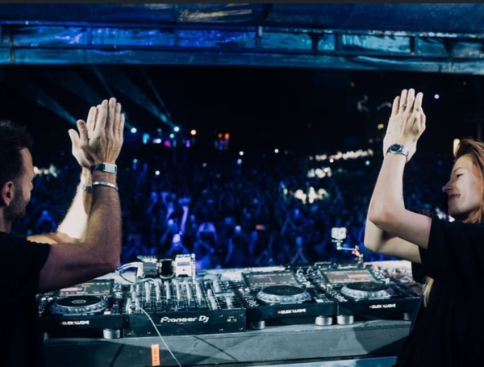

Los sonidos del techno, el house y la electrónica más vanguardista se toman el Parque Norte con Ritvales 2025, el festival que cada año marca el pulso de la escena electrónica en Colombia. Durante el sábado 1 y domingo 2 de noviembre, unas 50 mil personas disfrutaran de una experiencia inmersiva que combina arte, tecnología y naturaleza.
